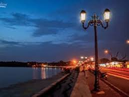
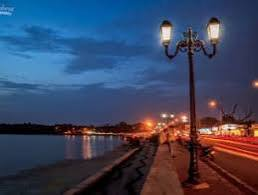

Futala Lake is one of the eleven lovely and scenic lakes in Nagpur. It is also recognized as the Telankhedi Lake, and it's located on Nagpur's western outskirts, some 6 kilometres from the city centre.
Futala Lake, a 200-year-old lake with a surface area of 60 acres, was established by Raja Bhosle. It's the perfect place for you and your spouse to get away from the hustle and bustle of city life. Even a simple walk along the path might be enthralling while watching the sunset. Evenings at Futala Lake with your loved one become even more memorable with the addition of three fountains.
On all sides, guard walls form the lake's perimeter, which is surrounded by a newly created walkway with granite stone pavements. Decorative lanterns, seats, and garden bays add an element of exquisiteness along the path.
Two 15-foot-high coloured fountains and one 100-foot-high fountain are other prominent tourist attractions in the area. Not only that but on the lake's southern shore is an immersion ghat, where visitors can take a dip in the lagoon's icy waters.
In the area, there are also several vendors selling mouth-watering local foods. Places along the lake's shores are also worth seeing, and many people visit these hotels for dinner after enjoying time with family and friends. You can also enjoy some corn while riding in a tonga (horse carriage). A romantic evening at one of the lakefront restaurants serves as an ideal date night for most couples.

 
